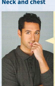

Face, hair, neck, chest
Face
Our face presents the image we show people and that's reflected in most of the idioms with face.
| idiom | meaning | example |
|---|---|---|
| make/put a face | show that you do not like something by making an unpleasant expression | Emma pulled a face when she heard that Jim was coming to the party. |
| keep a straight face | not laugh or change your expression, even though you want to laugh | It was all I could do to keep a straight face when I saw him in his new suit. |
| put a brave face on (something) | pretend you are happy about something when you are not | Chris was disappointed about not getting the job, but he’s put a brave face on it. |
| take something at face value | accept something as it looks without thinking about whether it might in fact not be quite what it appears | I decided to take his words at face value although my brother told me I was being naive. |
| on the face of it | according to the appearance of something | On the face of it, it's a generous offer. But I feel there might be a trick in it. |
| face to face | with another person in their presence rather than, say, by phone or letter | You should really discuss this with her face to face. |
Hair
Hair idioms often have associations with being calm and in control.
- If you say to someone Keep your hair on! (informal) you mean Calm down!
- Her boyfriend has disappeared again. She's tearing/pulling her hair out! [getting very anxious; usually used with continuous verb forms]
- My boss didn't turn a hair when I handed in my notice. [showed no reaction at all]
Neck and chest

It’s uncomfortable at home at the moment because my two flatmates, Tom and Ali, are at each other's throats1 all the time. It started when Tom used Ali's computer and managed to destroy some files. Tom decided to make a clean breast of it2. Now Ali won't let him use the computer without breathing down his neck3 all the time and he's always going on about how stupid Tom was. Tom finds him a real pain in the neck4 and he wishes he had never got it off his chest5, but had just let Ali think it was a computer virus that had destroyed his files. Tom knows he is in the wrong, but he wishes Ali wouldn't keep ramming it down his throat6 all the time and would just show his annoyance by giving him the cold shoulder7.
Note: Note how idioms with throat or neck often describe someone behaving in a way that the speaker finds aggressive or intrusive. Note also how the idea of a guilty secret being a weight on your chest is reflected in two idioms – make a clean breast of and get it off your chest.